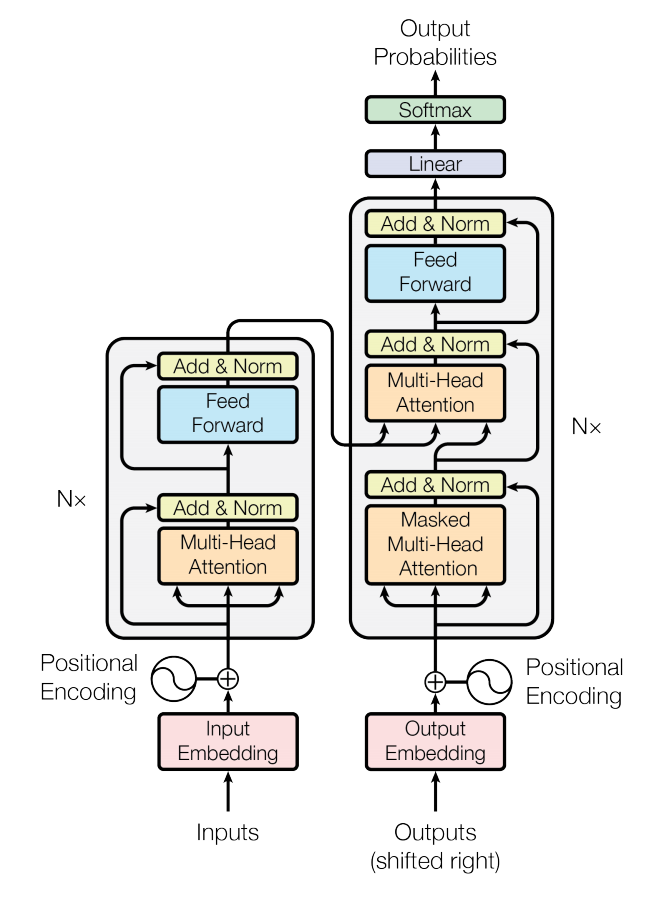
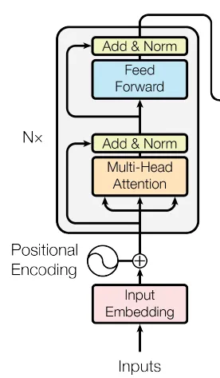
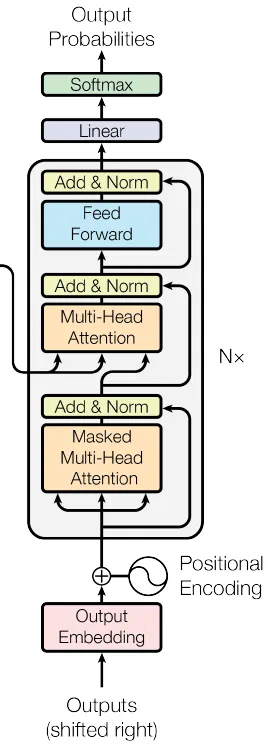

Introduction
Since the paper Attention Is All You Need Transformer have established themselves as the state of the art for natural language processing.
In 2021, An Image Is Worth 16x16 Words succcesfully applied the transformer architecture to images.
-
Firstly, this article walk through the fonctionnement of transformer and the attention principle.
-
Then we will examine the specificities of vision transformer and their differences with CNNs.
Transformer
Nowaday transformer come in a lot of differents form. In this article we will only talk about “basic” transformer as there were introduced in Attention Is All You Need.
The Transformer model has an encoder-decoder architecture and rely almost exclusively on the attention mechanism.
Transformer

- Encoder : The function of the transformer Encoder is understand and extract relevant information from the input sequence. It then outputs a continous representation (embedded) of the input sequence to the decoder.

The encoder blocks begins with the inputs. Here the entire sequence is fed at once.
They are then embedded at the input “input embedding” block.
Then a “positional encoding” is added to each element in the sequence.
(In NLP in allow to understand the position of each word in a sentence).
(Embedding and positional encoding are also required for vision transformer)
Then the “Add & Norm” block takes in a residual connection of the original element embedding, add it to the embedding from the multi-head attention, and then normalize it. Then this is fed to a “feed forward” block.
The multi-head attention and feed forward blocks are repeated n times (Hyperparameters, 6 in the orginal paper).
- Decoder : The function of the transformer Decoder is to retrieve information from the encoded represention.

The first multi-head attention layer is masked to prevent positions from attendig to the future.

Attention
As you can see on the schema attention is used in the Transformer in 3 places:
-
In the Encoder : The input sequence pays attention to itself
-
In the Decoder : The target sequence pay attention to itself but it is masked to prevent the model from attending the future position.
-
Encoder-Decoder in the Decoder : The target sequence pays attention to the input sequence
Attention : Attention is a mechanism in neural network that a model can learn to make predictions by selectively attending to a given set of data. The amount of attention is quantified by learned weights and thus the output is usually formed as a weighted average.
Self-attention: Self-attention is a type of attention mechanism where the model makes prediction for one part of a data sample using other parts of the observation about the same sample.
There are various forms of attention, Transformer relies on the scaled dot-product attention.
Scaled dot-product attention

Scaled dot-product attention utilizes three weight matrices, referred to as Wq, Wk and Wv, wich are adjusted as model parameter during training. These matrcies serve to project the input into query, key, and value components of the
Scaled dot-product attention utilize a query matrix Q, a key matrix k and a value matrix V. It start by
Multi-head attention
GitHub Pages is a static site hosting service that takes HTML, CSS, and JavaScript files straight from a repository on GitHub, optionally runs the files through a build process, and publishes a website.
In addition to that, it’s also free.
The requirements for using GitHub pages in our case are:
-
To publish a user site, you must create a repository owned by your personal account that’s named
<username>.github.io. -
The source files for a project site are stored in the same repository as their project.
-
You can only create one user or organization site for each account on GitHub.
There are also some limitations outlined here.
GitHub provides a good quick-start, so I won’t go much in detail about that. It usually comes down to these steps:
- Create a repository and name it
username.github.ioas the repository name. (In my case, it will bemagsther.github.io) The website will be published at https://magsther.github.io/ - Clone the repository to your computer.
- Cd into the folder
- Add an index.html
- Add, commit, and push your changes
- Enable and configure Pages (in GitHub)
After a little while, you can visitusername.github.io to view your new website.
Next step is to setup a GitHub Pages site with Hugo.